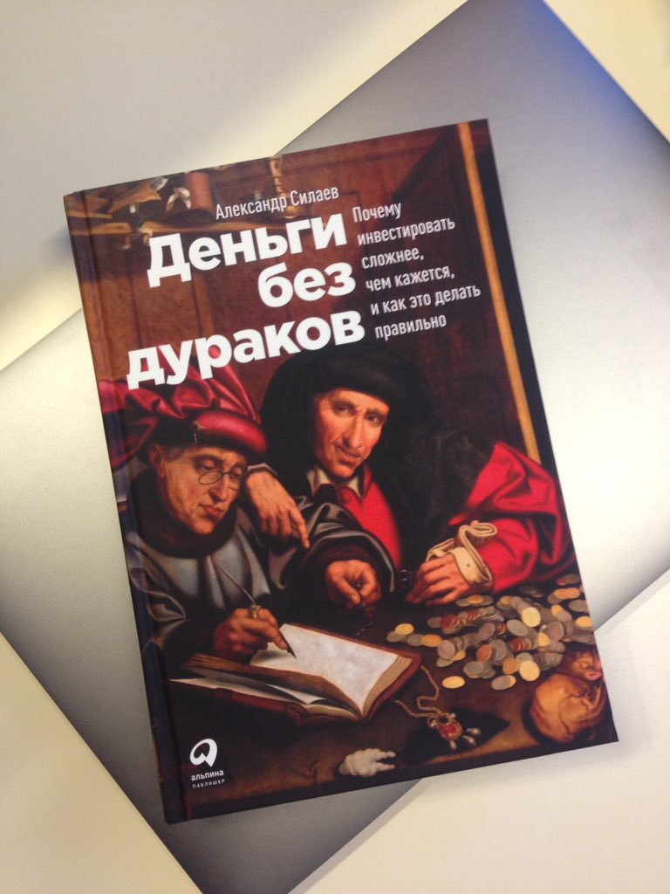
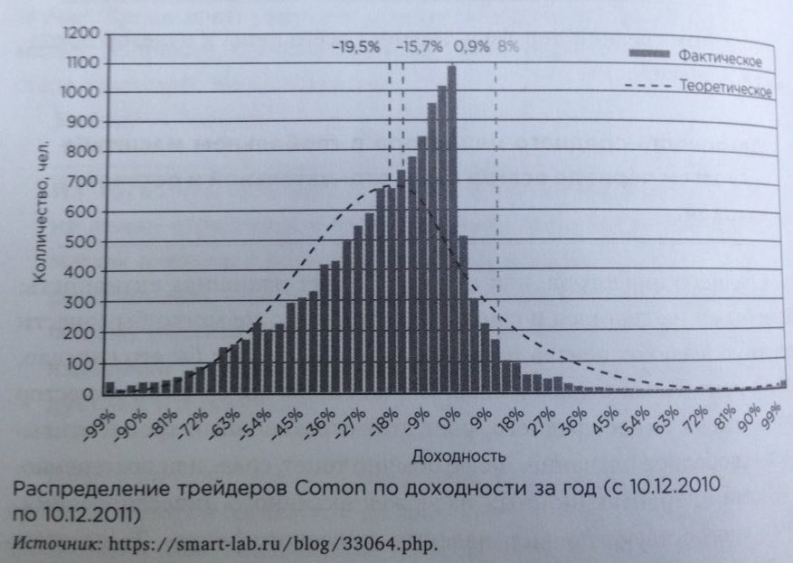
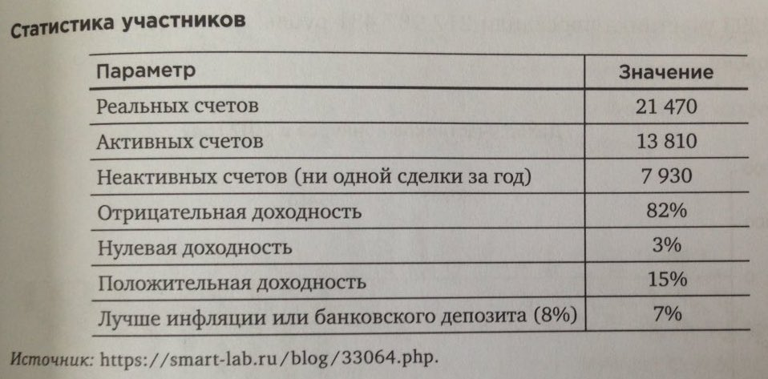
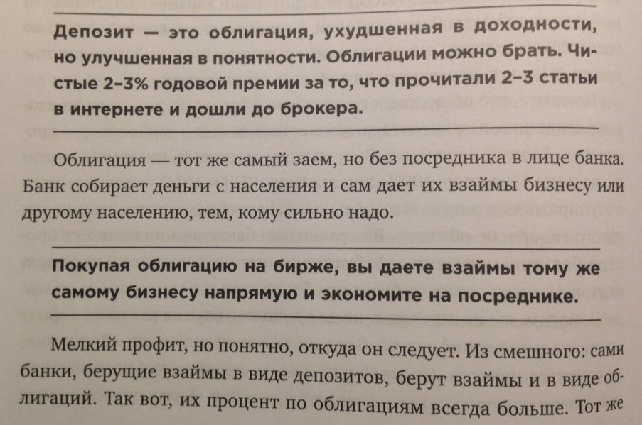
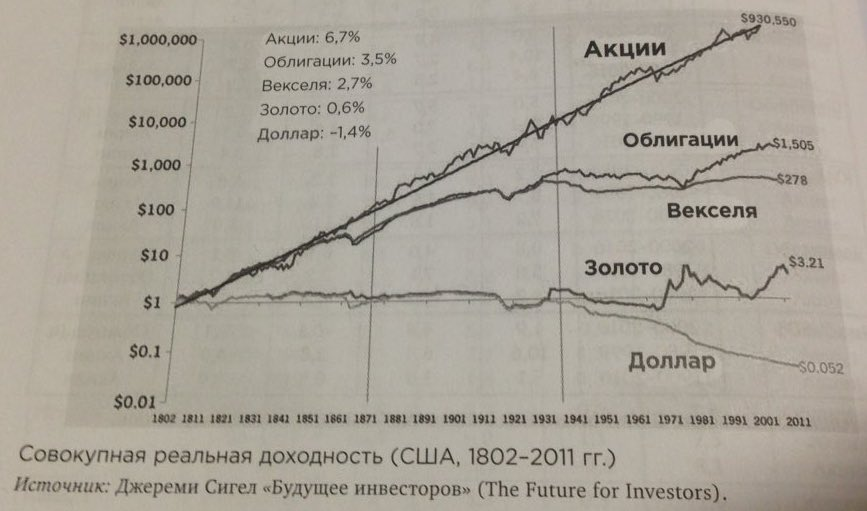
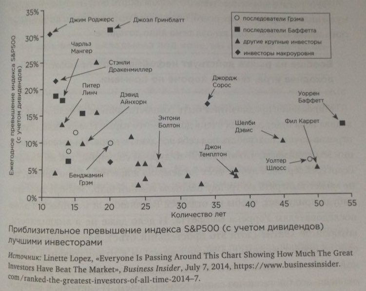
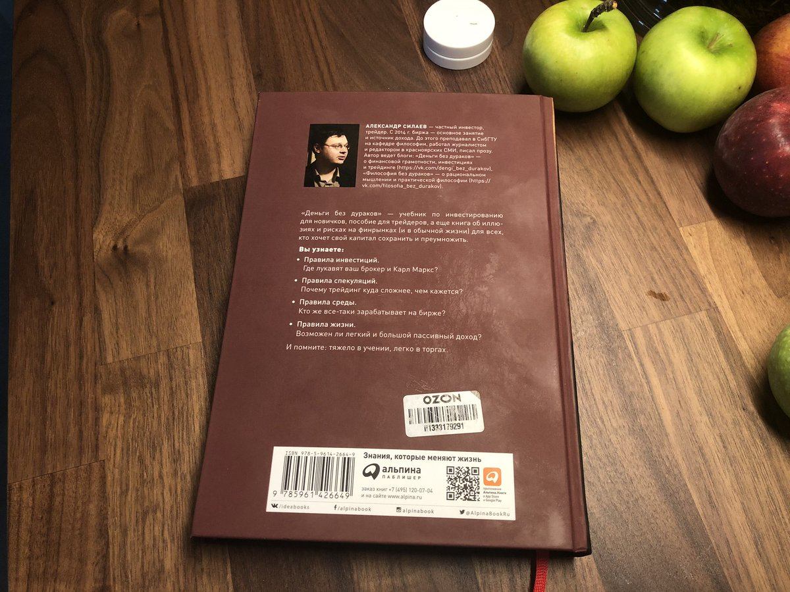

Деньги без дураков
Не думал, что есть книги которые не удобно читать в метро. «Деньги без дураков» ну очень большая по сравнению с теми что читал в метро ранее, лежит на 15. Сдаюсь, буду её читать только дома.

Деньги — это не кролики, если их предоставить самим себе, они не размножаться
Это так же в копилку того, что сейчас называют пассивным инвестированием в индекс — там также нужно активничать и не покупать условный индекс на Японию, который уже 30 лет не может превысить свои максимумы.

Иллюстрация «95% трейдеров теряют деньги на рынке». По данным для нашего рынка и наших трейдеров. Если вы думаете что «вы лучше половины» в трейдинге, то свой капитал вы потеряете примерно за 5 лет.

А это статистика по уже «опытным» трейдерам со стажем. Внимание на последнюю строчку. Всего 7% лучше депозита. 82% с отрицательной доходностью.
В финансовой индустрии у вас нет друзей
Действительно, с чего бы им быть? Это нужно всегда держать в голове. Деньги не бесконечны. 99% участников рынка на вас хотят заработать.
Если под управлением менеджера капитал в несколько миллиардов, рискованно не платить ему за это хотя бы несколько миллионов
Совершенно верно! Никогда не понимал зачем люди считают заработные платы условного Сечина, или друзей Путина. Что бы что? Люди или уйдут или сделают большую гадость.

Браво!

Доллары, рубли, нет никакой разницы. Это просто бумажки за которые, в моменте, можно купить что-то более реальное с реальной доходностью.
Автор в делает вывод, что получать прибыль выше инфляции на долгий срок, очень сложно и даётся это только самым умным. По этому без инвестиций в знания, активность — не обойтись. Никакой магии нет, даже в «пассивных инвестициях» будет около ноля реальной доходности. Верю.

Какова вероятность того, что все что слева пройдя 55 лет покажут такую-же доходность как у Баффетта? Тут важное замечание. Некоторые инвесторы уже могут показать 55 лет трекинга, потому что умерли.
Важно инвестировать и в своё здоровье. Сложный процент сделает дело.

Книга про все способы как потерять деньги и всего про два способа их сохранить, или, если приложить усилия, приумножить. Книга не понравилась, язык автора из блогосферы. Но, за то, правда без прикрас.